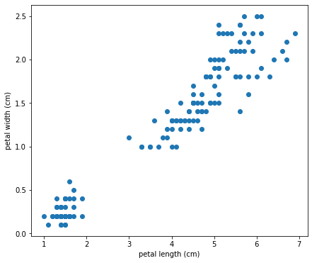
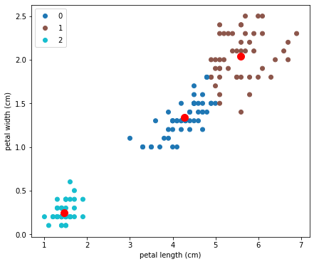
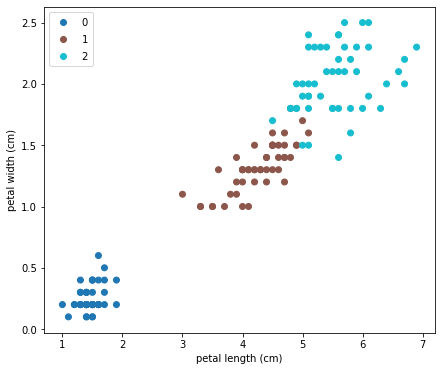

โดย ชิตพงษ์ กิตตินราดร | มกราคม 2563
ที่ผ่านมา 11 บท เราได้ทำความรู้จักกับ Supervised learning ซึ่งมีเป้าหมายในการสร้างโมเดลเพื่อทำนายคำตอบ โดยมีชุดข้อมูลที่รู้คำตอบอยู่แล้วเป็นแหล่งในการเรียนรู้ของ Algorithm ในบทที่ 12 นี้ เราจะมาเรียนรู้ Unsupervised learning ซึ่งเป็นการหาคำตอบจากข้อมูลที่ยังไม่มีใครรู้ว่าคำตอบคืออะไร โดยเราจะมุ่งเน้นที่ Clustering หรือการจัดกลุ่มข้อมูล
สมมุติเรามีข้อมูลที่เป็นความสัมพันธ์ระหว่างสองสิ่ง เช่นในชุดข้อมูล Iris เรามี Petal length และ Petal width ของดอก Iris จำนวน 150 รายการ เราลองโหลดและดูข้อมูล 10 รายการแรกกัน:
import numpy as np
import matplotlib.pyplot as plt
from sklearn import datasets
# Load the iris data
iris = datasets.load_iris()
X = iris.data[:, 2:]
y = iris.target
# Explore the data
print(X[:10, :])
ได้ผลออกมาดังนี้:
[[1.4 0.2]
[1.4 0.2]
[1.3 0.2]
[1.5 0.2]
[1.4 0.2]
[1.7 0.4]
[1.4 0.3]
[1.5 0.2]
[1.4 0.2]
[1.5 0.1]]
สามารถพล็อตข้อมูลเป็น Scatterplot ได้ดังนี้:
# Plot the data
plt.figure(figsize=(7,6))
plt.scatter(X[:, 0], X[:, 1], cmap='Paired_r')
plt.xlabel(iris.feature_names[2])
plt.ylabel(iris.feature_names[3])
plt.show()

เราจะมาจัดกลุ่มข้อมูลชุดนี้ออกเป็น 3 กลุ่ม โดยสมมุติว่าเราไม่รู้มาก่อนว่า 3 กลุ่มนี้คืออะไรบ้าง (อันที่จริงเรารู้ เพราะข้อมูลชุดนี้เป็น Classification dataset แต่เราไม่ได้นำคำตอบมาใช้ เพื่อจะได้เปรียบเทียบให้ดูภายหลังว่าการแบ่งกลุ่มของ Algorithm เหมือนหรือต่างกับคำตอบจริงแค่ไหน)
เราจะใช้ K-Means clustering algorithm ซึ่งเรียกใช้ได้จาก Class KMeans ในโมดูล sklearn.cluster:
# Apply K-Means
kmeans = KMeans(n_clusters=3).fit(X)
สังเกตว่าเรากำหนดจำนวน Cluster เป็น 3
เราสามารถแสดงผลการจัดกลุ่มได้ด้วย Method .label_ ของ KMeans instance:
# Output labels
y_clustered = kmeans.labels_
print(y_clustered)
ผลออกมาคือ:
[2 2 2 2 2 2 2 2 2 2 2 2 2 2 2 2 2 2 2 2 2 2 2 2 2 2 2 2 2 2 2 2 2 2 2 2 2
2 2 2 2 2 2 2 2 2 2 2 2 2 0 0 0 0 0 0 0 0 0 0 0 0 0 0 0 0 0 0 0 0 0 0 0 0
0 0 0 1 0 0 0 0 0 1 0 0 0 0 0 0 0 0 0 0 0 0 0 0 0 0 1 1 1 1 1 1 0 1 1 1 1
1 1 1 1 1 1 1 1 0 1 1 1 1 1 1 0 1 1 1 1 1 1 1 1 1 1 1 0 1 1 1 1 1 1 1 1 1
1 1]
นี่คือหมายเลข Label ขอบข้อมูลทั้ง 150 รายการที่ K-Means แบ่งให้ เรามาลองพล็อต Scatterplot ที่แบ่งสีตาม Label ใหม่นี้กัน:
# Plot the clustered data with centroids
plt.figure(figsize=(7,6))
scatter = plt.scatter(X[:, 0], X[:, 1], c=y_clustered, cmap='tab10')
plt.scatter(kmeans.cluster_centers_[:, 0], kmeans.cluster_centers_[:, 1], s=100, c='red')
plt.xlabel(iris.feature_names[2])
plt.ylabel(iris.feature_names[3])
plt.legend(*scatter.legend_elements())
plt.show()
ภาพที่ได้คือ:

จุดสีแดง คือจุดศูนย์กลางของแต่ละ Cluster ซึ่งเราจะอธิบายในส่วน Algorithm ว่าได้มาอย่างไร
อย่างที่บอกตอนแรก คือข้อมูลชุดนี้ในความเป็นจริงเรารู้คำตอบ เพื่อความน่าสนใจจะมาลองดูว่าต้นฉบับนั้นจำแนก Label อย่างไร สิ่งที่ต้องทำก็เพียงแค่เปลี่ยน Argument c=y_clustered ใน plt.scatter เป็น c=y เพื่อให้ Map สีเข้ากับข้อมูล y ต้นฉบับ ได้ผลคือ:

ดูคล้ายกันดีมาก ต่างกันเล็กน้อยตรงรอยต่อ
ถ้าพิจารณาดู y ของข้อมูลชุดนี้ คือชื่อสายพันธุ์ของดอก Iris ซึ่งมี 3 Class คือ Setosa, Versicolor, Virginica ข้อมูลที่เก็บมาคือความยาวและความกว้างของกลีบดอก ซึ่งเรารู้ว่าโดยธรรมชาติแล้ว Iris ทั้ง 3 สายพันธุ์มีลักษณะความยาวความกว้างกลีบดอกไม่เหมือนกันดังภาพสุดท้าย การที่เราใช้ Machine จำแนกข้อมูลทั้งสองนี้ออกเป็น 3 Class แล้วได้ผลใกล้เคียงการจำแนกของธรรมชาติ ก็ดูเป็นสิ่งที่น่าทึ่งทีเดียว เพราะ Algorithm เป็นกลไกทางคณิตศาสตร์ เมื่อกลไกคณิตศาสตร์นี้ทำงานแล้วได้ผลเหมือนธรรมชาติ นั่นก็อาจจะแปลว่าธรรมชาติสร้างสิ่งต่างๆ ตามหลักคณิตศาสตร์ก็เป็นได้
ทีนี้เรามองลองดูว่า K-Means clustering จำแนกข้อมูลเป็นกลุ่มๆ โดยไม่รู้มาก่อนว่าแต่ละกลุ่มคืออะไรได้อย่างไร
K-Means clustering มีขั้นตอนการทำงานดังนี้
สมมุติว่าต้องการแบ่ง Cluster เป็น 2 Class:
1) สุ่มเลือกข้อมูลสองจุดใน Dataset เป็นจุดศูนย์กลางเริ่มต้น เรียกว่า Centroid
2) กำหนดให้รายการข้อมูลที่อยู่ใกล้แต่ละ Centroid เป็นสมาชิกของ Centroid นั้น โดยข้อมูลแต่ละรายการจะเป็นสมาชิกได้ Centroid เดียวเท่านั้น:
3) คำนวนค่าเฉลี่ยของสมาชิกทุกรายการในแต่ละ Centroid แล้วย้าย Centroid ไปสู่ค่าเฉลี่ยนั้น ขั้นตอนนี้จะทำให้ Centroid ขยับที่เล็กน้อย
4) ทำซ้ำข้อ 2) และ 3) จนกระทั่งได้ Cluster 2 Class โดยมีเงื่อนไขว่าจะจบก็ต่อเมื่อได้รหัสของ Class และ Centroid ที่ทำให้ค่าเฉลี่ยของผลรวมระยะทางระหว่างรายการข้อมูลที่เป็นสมาชิก Centroid กับ Centroid นั้นๆ มีค่าน้อยที่สุด โดยคำนวนจากข้อมูลทุกรายการและ Centroid ทุก Centroid สามารถเขียนเป็น Cost function ได้ดังนี้:
จริงๆ ยังมี Clustering algorithm อื่นๆ อีก แต่ K-Means นั้นเป็นที่นิยมมากที่สุด ถ้าสนใจสามารถศึกษาเพิ่มเติมเอกได้จากเอกสารของ scikit-learn
ตอนต่อไปเราจะเริ่มเรียนรู้การตรวจหาข้อมูลที่ผิดปกติ ไม่เข้าพวก ที่เรียกว่า Anomaly detection
หน้าแรก | บทที่ 11 Boosting | บทที่ 13 Anomaly Detection